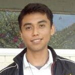

CURRICULUM VITAE |
| MANUEL FORTUNA MARTÍNEZ |  | |||||||
|
31 DE DICIEMBRE DE 1996 CD VALLES, S.L.P CALLE: TANCULPAYA No. 1004 COL. LA PIMIENTA CP. 79020 TEL DE CASA: (481)38-1-58-86 TEL CEL: (481)38-9-21-42 |
||||||||
| manuelfmartinez15@gmail.com | ||||||||
| FORMACIÓ ACADÉMICA | ||||||||
| EDUCACIÓN SUPERIOR |
||||||||
| INSITUTO TECNOLÓGICO DE CD VALLES |
||||||||
| Cursando actualmente el séptimo semestre en la carrera de Ingeniería en Sistemas Computacionales. | ||||||||
EDUCACIÓN MEDIA SUPERIOR |
||||||||
| PRACTICAS PROFESIONALES |
||||||||
| CENTRO DE BACHILLERATO TECNOLÓGICO INDUSTRIAL Y DE SERVICIOS No. 46 |
||||||||
| Auxiliar en el laboratorio de cómputo del CBTis No. 46 en Cd Valles, S.L.P, de febrero 2015 a mayo 2015. |
||||||||
| SERVICIO SOCIAL |
||||||||
| CENTRO DE BACHILLERATO TECNOLÓGICO INDUSTRIAL Y DE SERVICIOS No. 46 |
||||||||
| Ayudantías Técnicas en la oficina de medios y métodos del CBTis No. 46 en CD valles, S.L.P, de agosto 2014 a Febrero 2015. |
||||||||
| CONFERENCIAS Y CURSOS |
||||||||
| Ponente en la conferencia INNOVATE en el CBTis n° 46. En el marco de su XLIV aniversario, cd valles S.L.P, Octubre 2017. |
||||||||
| HABILIDADES | ||||||||
|
||||||||
| HABILIDADES TECNICAS | ||||||||
|
||||||||
| Area laboral | ||||||||
| Cajero parcial por temporada escolar, administración soriana S.A de C.V, de Junio 2016 a Agosto 2016. | ||||||||
| Descargar |